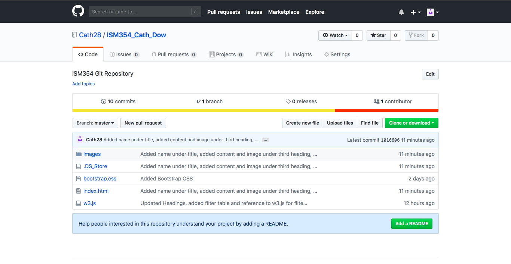

GETTING TO KNOW GIT & GITHUBGIT is a version control tool that allows teams to manage source code and verisoning of products, which are under development, more efficently. GIT and GITHub work in conjunction with one another. Git is the version control tool that is used to publish or "push" content to the online platform known as GITHub. In order ot use GITHub you must register for a free account. Use this link to register for a free account on GITHub. After registering for a free account you can create an online repository. The repository is the online location of your local files- pushed from your local repository by GIT. Refer to this section for more on repositories |
INSTALLING GITWindows:Download and install GIT for Windows using this link. OSX:OSX provides a pre-installed version of GIT. HINT: Type "git version" into your terminal to verify that GIT is installed onto your device- the terminal is the most common way to use GIT. |
CREATING REPOSITORIESLocal Repositories:In order to push your files to a remote server (i.e GITHub), you will first need to create a local repository:
HINT: To create a new folder from the terminal you can use the "mkdir Online Repository:In order to push your local repository online, you will need to link your repository to GITHub:
HINT: The server URL can be found on GITHub under the relevant online repository's page by clicking the "clone or download" button. |
UDERSTANDING GIT HUB

At this stage, you will mainly be working with repositories on GITHub. Therefore, the basic activites that you will need to do on GITHub are:
|
SOME BASIC COMMANDSHere are some basic GIT commands that are relevant when using GIT and will help you as you continue on your GIT journey:
HAPPY CODING! |